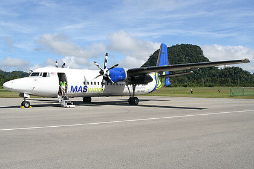
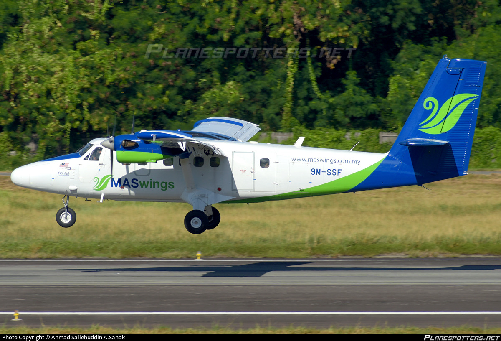
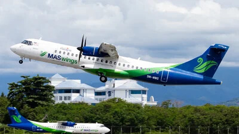

MASwings is a regional airline in Malaysia, established on 1 October 2007 as a wholly owned subsidiary of the Malaysia Aviation Group (MAG), which also includes Malaysia Airlines and Firefly.[1] The airline is dedicated to providing essential air connectivity to remote and rural areas in Sabah and Sarawak under the Rural Air Services (RAS) program.

The airline began operations with a fleet of Fokker 50

and DHC-6 Twin Otter aircraft

The airline transitioned to ATR 72-500 aircraft, which were more fuel-efficient and better suited to the airline’s regional operations.